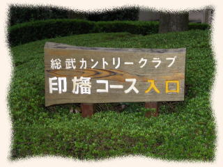
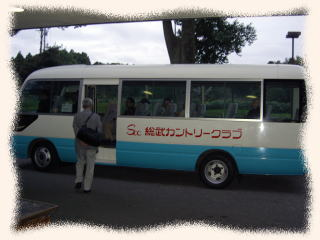
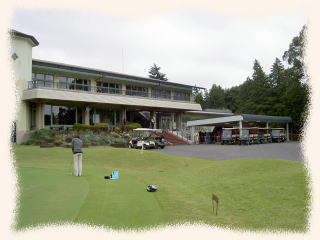
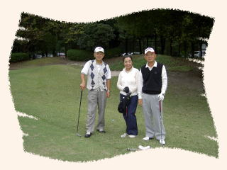
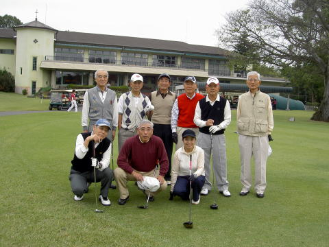
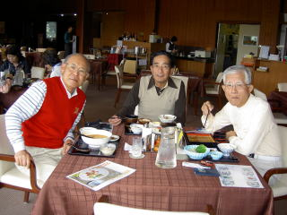
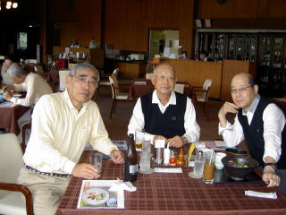
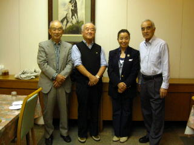
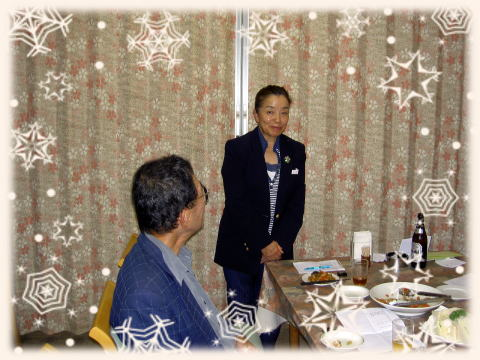
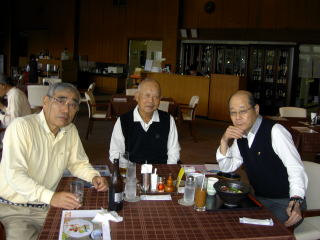

横浜国立大学工学部第四寮
第１０回弘南寮ゴルフ大会
時 ： 平成２３年月１０月２１日（金）
所 ： 総武カントリー 印旛コース
|  |  |
| 弘南寮OB会活動の一環として、第一回弘南寮ゴルフ大会が開催されたのは、平成１８年５月１２日（金） であった。 記念すべき 第１０回大会は当初、３月２８日（月） に予定日されていたが、東北大震災余波で急遽 ５月３０日（月）に 延期され、さらにこの５月３０日は台風の為、１０月のこの日まで延期された。 この間の稲田幹事さんの気苦労は、誠に大変だったと思いやられます。本当にご苦労様でした。 |

練習場にて
（左から）
秋山さん
稲田夫人
高石さん
スタート前に勢揃い
|  |
後列左から 野村安広 建築３７年 秋山正樹 建築３８年 高橋千穐 応化３７年 稲田浩一 電工３８年 高石周志 電工３６年 山之内克彦 機械34年 前列左から 安岡慶和 機械40年 野村慎一 電工40年 稲田ひとみ 列外 猪原暉雄 造船３７年 |
昼食風景 左から
| 稲田 高橋 山之内 | 野村（慎） 高石 安岡 | 秋山 猪原 稲田夫人 野村（安） |
|  |  |  |
当日の成績
Gross Hdcp Net
優勝 稲田ひとみ ５２−４８＝１００ 31 ６９
２位 野村 安広 ４１−４２＝８３ 9 ７４
３位 野村 慎一 ５２−４８＝１００ 22 ７８
栄えあるベスグロは Gross ８３ の野村安広さんでした。
|  | 晴れて優勝の弁 見事なブッチギリ優勝でした。男性顔負けの豪快なドライバー、更には正確なアップローチ。次回もまた、優勝候補の筆頭です。 |
|  | 敗軍の将 何を語る？ |
今回は記念すべき 第１０回大会であったが、故障者続出でヤヤ淋しい大会となった。
次回は 両野村さんの幹事で、来年４月２０日（金） をメドに トネパーク で開催予定です。
その近くになったら改めて幹事さんから発表がある筈ですので、大勢の参加を期待しております。
以上文責／いのはら